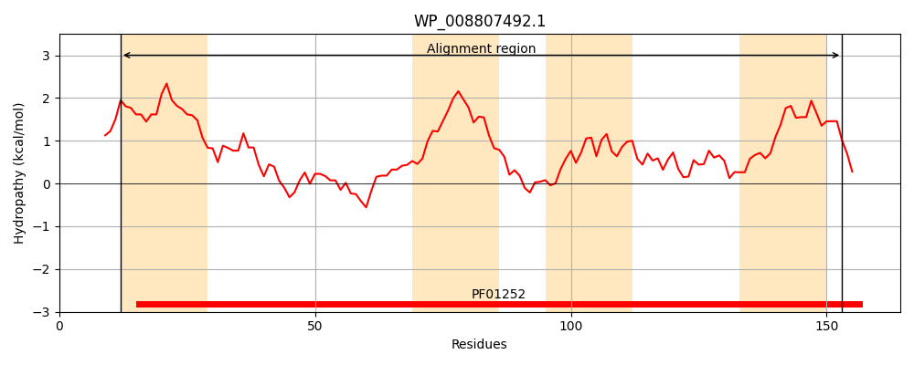
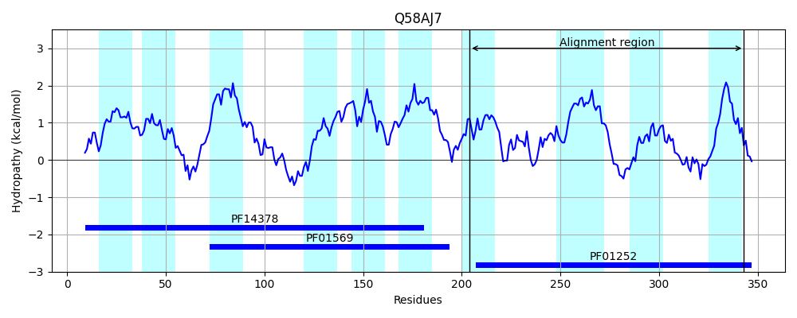
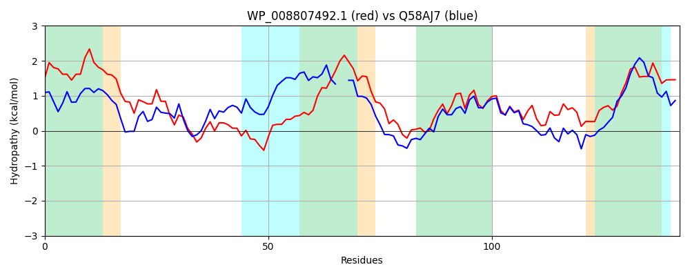

Hit Accession: Q58AJ7
Hit TCID: 9.B.105.1.1
Hit Description: gnl|BL_ORD_ID|14229 gnl|TC-DB|Q58AJ7|9.B.105.1.1 PbrB/pbrC lead resistance fusion protein OS=Ralstonia metallidurans (strain CH34 / ATCC 43123 / DSM 2839) GN=pbrB/pbrC PE=3 SV=1
Mach Len: 142
e:0.000000
Query TMS Count : 4
Hit TMS Count: 10
TMS-Overlap Score: 3.000000
Predicted Substrates:None
BLAST Alignment:
| Protein Hydropathy Plots: | |
|---|---|
|  |  |
Pairwise Alignment-Hydropathy Plot: | |
|  | |